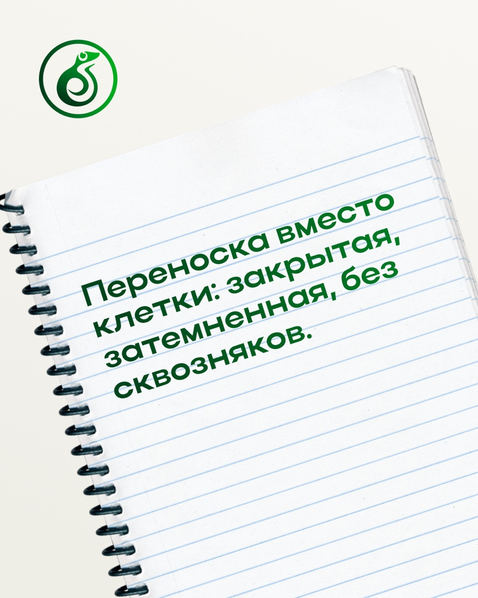
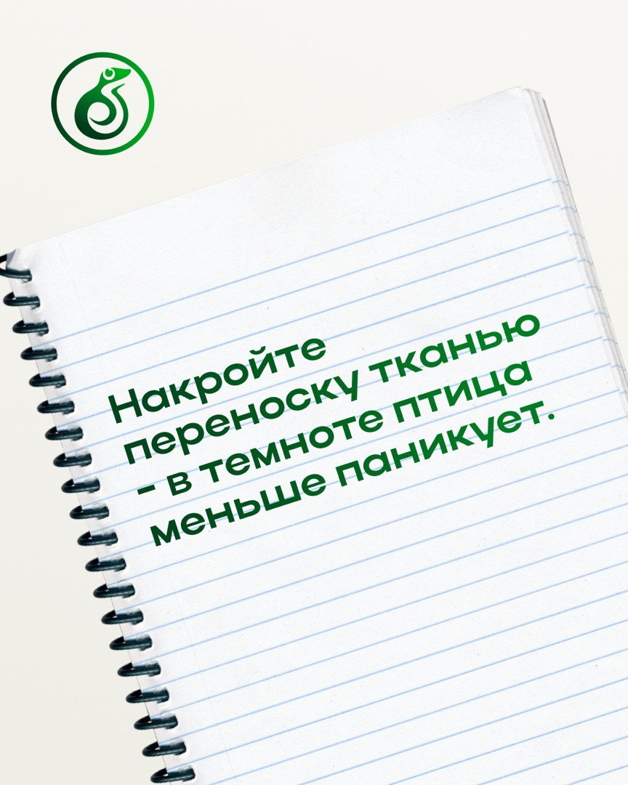
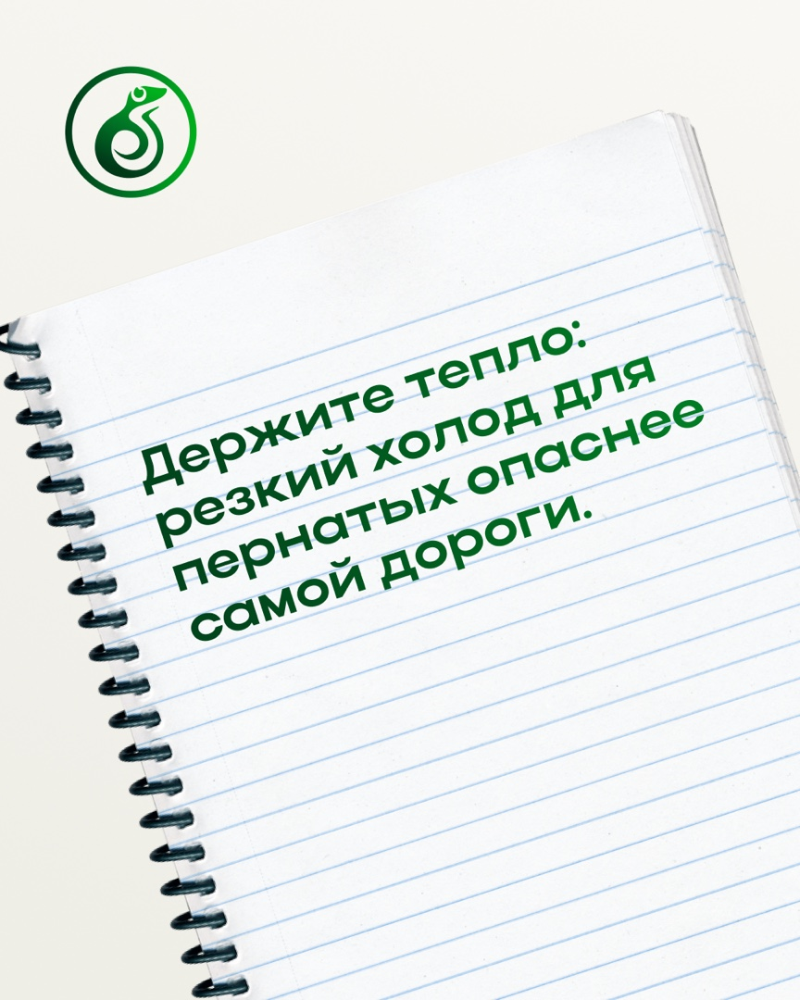
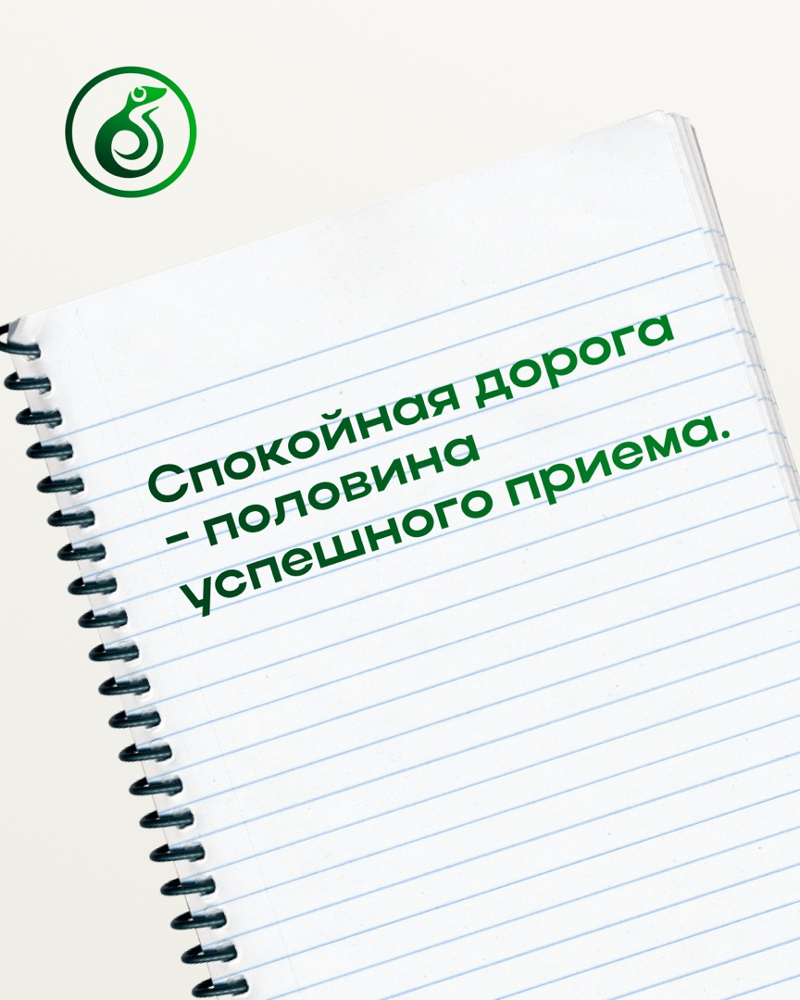
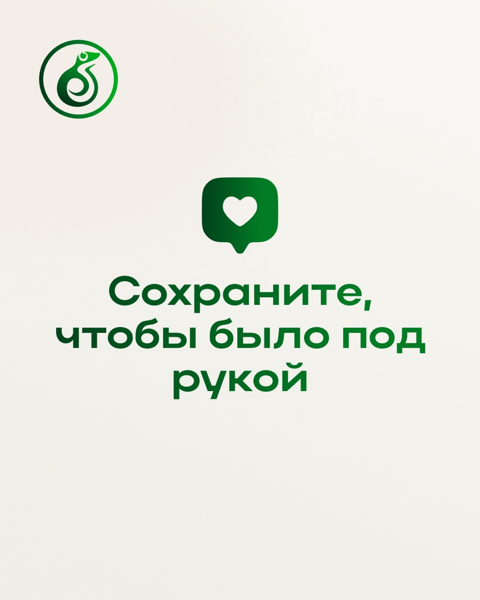
1 / 7
Сложные ветеринарные темы перевели в понятные материалы: от безопасной перевозки птиц до признаков боли и ухода за черепахами. Отдельно показали специализацию центра — помощь экзотическим животным.


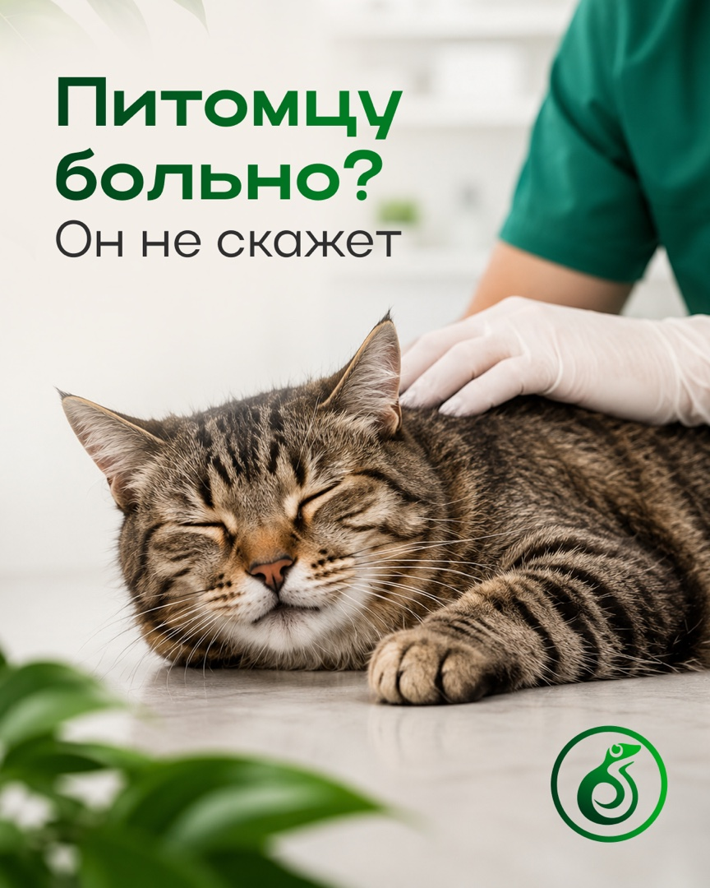
Не выборка для портфолио, а вся готовая работа. Откройте публикацию, чтобы посмотреть её крупнее.






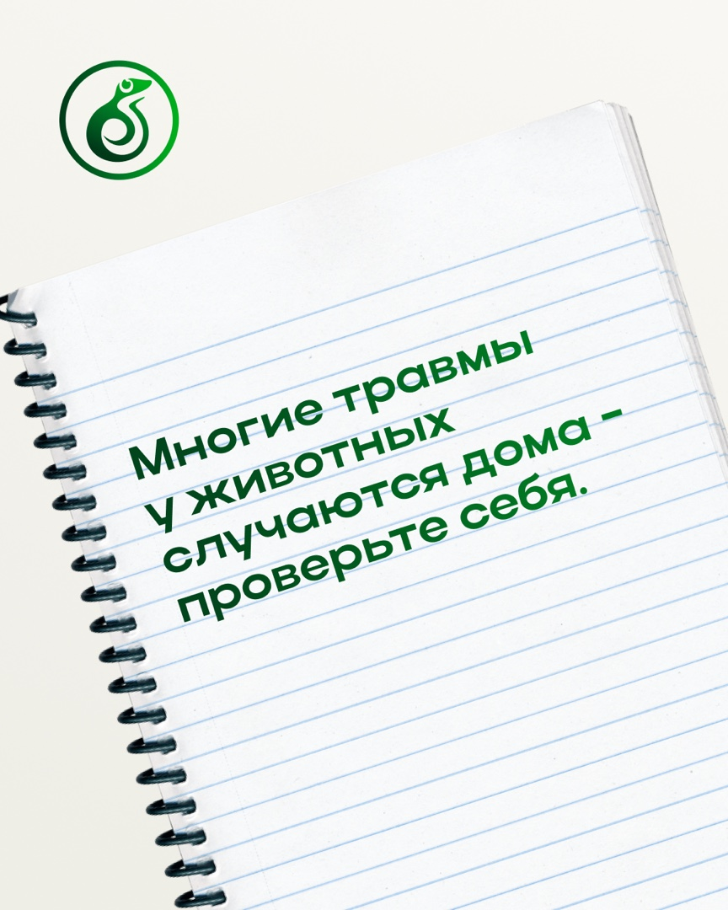
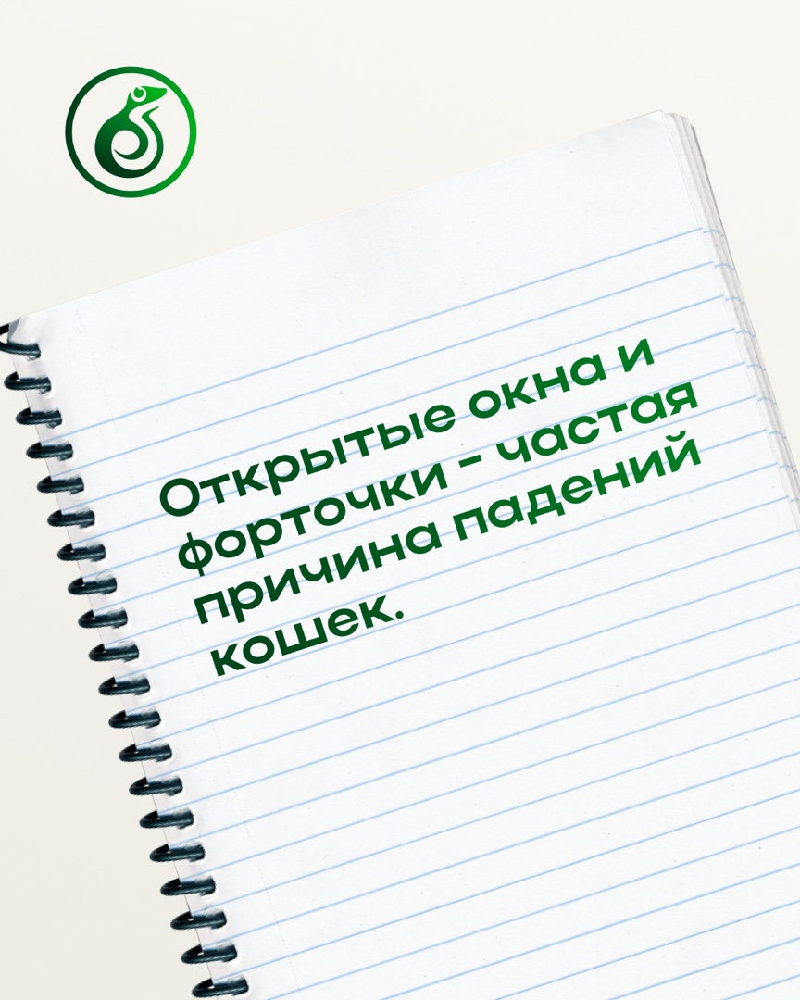
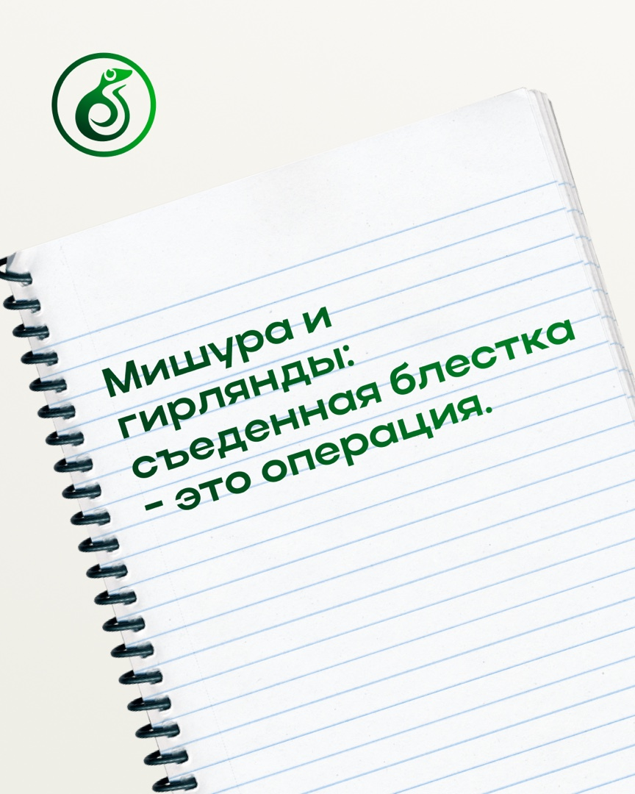
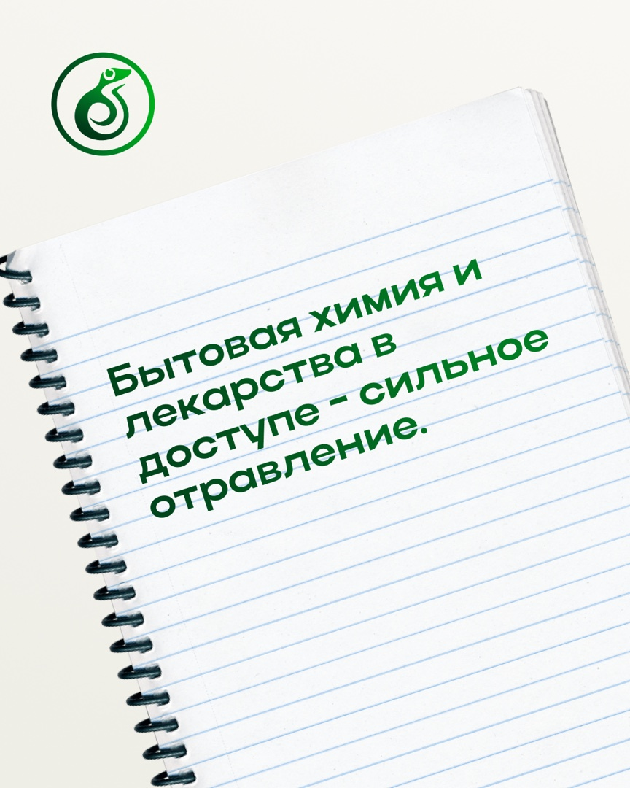
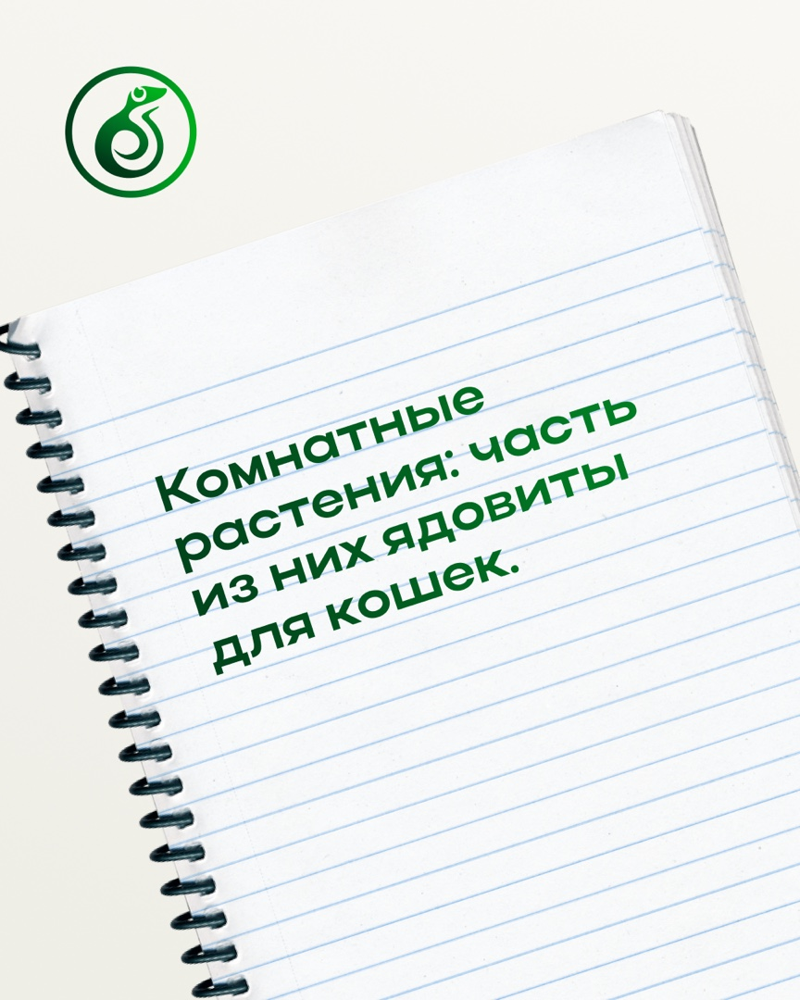
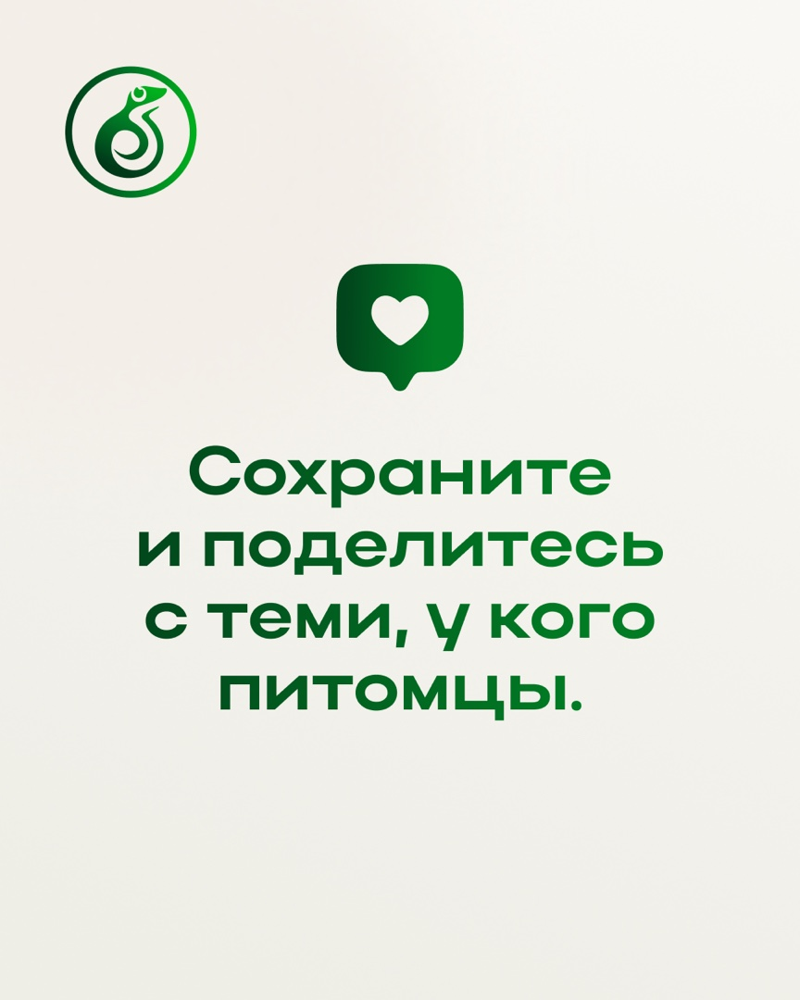
Соберём темы, напишем тексты и оформим публикации под ваш бизнес.